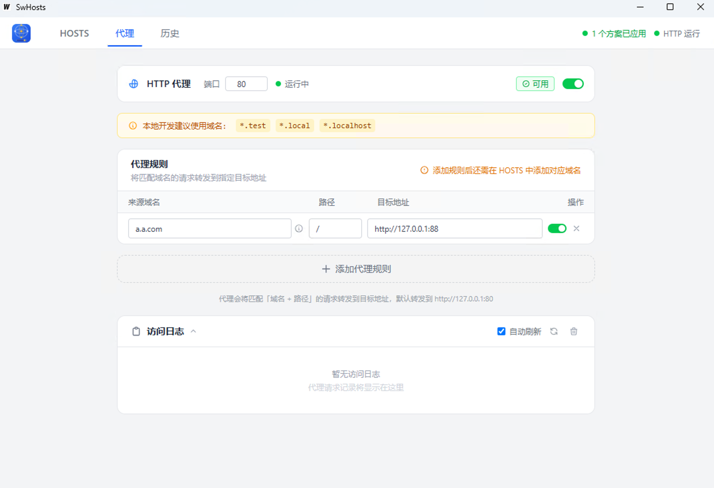
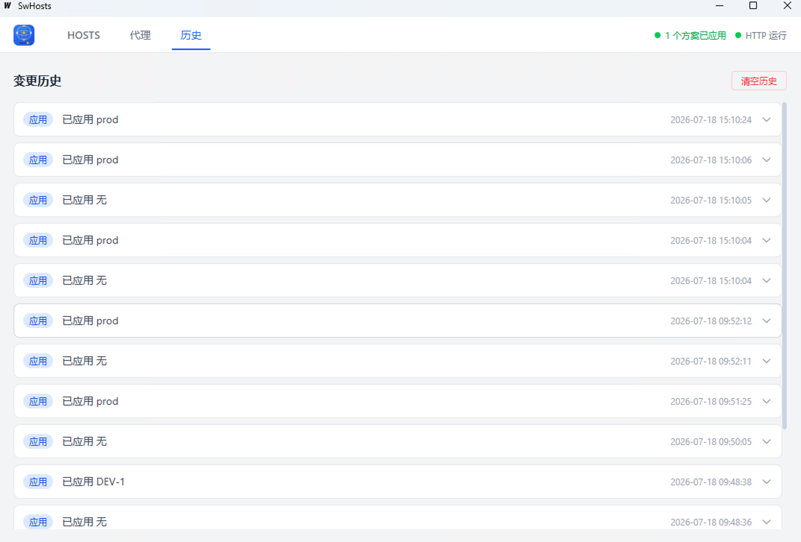

HOSTS 管理 + 反向代理 + 证书管理 + 代码编辑器，四大核心能力合一
创建多个 HOSTS 方案，支持本地编辑或远程 URL 拉取。一键激活/停用，自动写入系统 HOSTS 文件。拖拽排序、文件夹分组，远程方案支持定时自动刷新。
内置 HTTP（80）和 HTTPS（443）反向代理，多条代理规则可独立启用/停用。代理访问日志实时查看，端口占用检测显示占用进程名和 PID。
HTTPS 代理配套证书管理：自动生成 CA 根证书和域名证书，支持安装到系统信任链。证书状态可视化，有效期、过期提醒一目了然。
内置代码编辑器，行级颜色标识：绿色=正确、红色=有误、灰色=注释。快捷键 Cmd/Ctrl + / 快速注释，自动保存，修改后即时生效。
创建多个 HOSTS 方案，支持本地编辑和远程 URL 拉取。一键激活/停用，自动写入系统 HOSTS 文件。拖拽排序、文件夹分组，远程方案还支持定时自动刷新。

内置 HTTP（80）和 HTTPS（443）反向代理服务器，多条代理规则可独立启用/停用。代理访问日志实时查看，端口占用检测显示占用进程名和 PID，告别 Nginx/Caddy 的繁琐配置。
HTTPS 代理配套完整的证书管理能力。自动生成 CA 根证书和域名证书，一键安装到系统信任链，证书状态、有效期清晰可视。
SwHosts CA · 有效期至 2027-08-12
有效期至 2027-08-12
有效期至 2026-09-01
内置代码编辑器，专为 HOSTS 文件优化。行级颜色标识让你一眼看清每条记录的状态，快捷键快速注释，修改自动保存，即时生效。

除了四大核心能力，还有这些贴心辅助
搜索所有方案中的域名、IP，模糊匹配快速定位
修改 HOSTS 后自动刷新系统 DNS 缓存，无需手动操作
查看和一键重置系统 HOSTS 文件，安全可控
记录所有修改，支持回滚，变更清晰可追溯
检测 80/443 端口占用，显示占用进程详情
实时查看代理请求记录，方便调试排查问题
每条代理规则可独立启用/停用，灵活控制
配置保存在本地 JSON 文件，方便备份迁移
CA 和域名证书全部存储在本地，可随时卸载清理
三步开始使用，告别手动编辑 /etc/hosts
点击左侧 "+" 新建方案，输入方案名称（如"开发环境"），在编辑器中填写域名和 IP 映射
# 开发环境
127.0.0.1 admin.example.test
127.0.0.1 api.example.test
点击方案右侧的开关即可激活，hosts 内容自动写入系统文件。状态栏显示"1 个方案已应用"表示生效中
切换到"代理"标签，开启 HTTP 代理。域名请求自动转发到本地开发端口，前端调试更方便
选择适合你系统的版本，下载即用
macOS 用户如遇"无法验证开发者"提示，请右键 app 图标选择"打开"
关于 SwHosts 你可能想知道的
~/Library/Application Support/SwHosts/config.json，Windows 位于 %APPDATA%/SwHosts/config.json。持续迭代，不断优化
2026-08-12